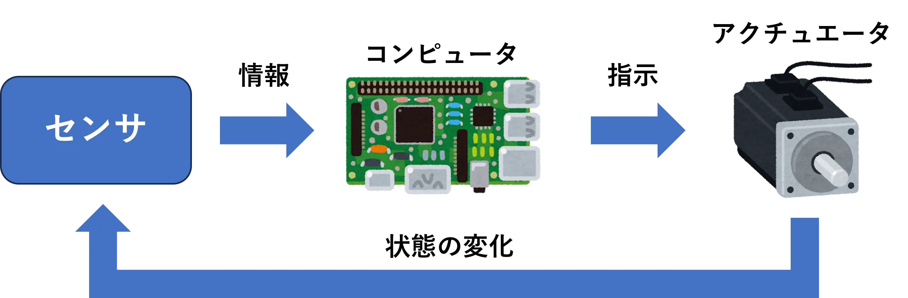
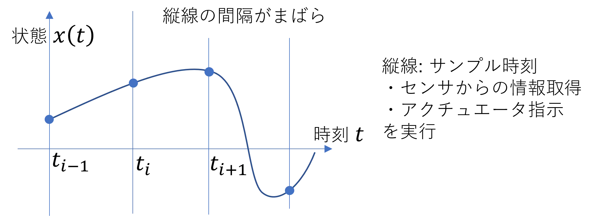

2026/9/4更新
非周期的サンプル値非線形制御
ロボットなどの制御対象はコンピュータを使って制御されます。制御システムは、センサから情報を得てモータなどのアクチュエータを動かす (フィードバック制御) 一連の流れを一定の時間間隔 (サンプリング時間) で実行するように実装されることが多いです。

システムの高度化によって、ネットワーク通信を使う場合などを例として、一定のサンプリング時間を確保することが難しい場合があります。その場合でもシステムの制御を実現する方法として、非周期的サンプル値制御があります。関連論文では、どの程度サンプル間隔が変化してもよいのかを理論的に解析しました。1

参考文献
-
Kazuki Umemoto, Takahiro Endo, Fumitoshi Matsuno, "Local Robust Stability on Compact Set for Nonlinear Systems with Continuous Time Controller Against to Aperiodic Sampling and Disturbance", IET Control Theory & Applications, Vol. 17, No. 2, pp.133-143, 2023.1, DOI: 10.1049/cth2.12367 ↩